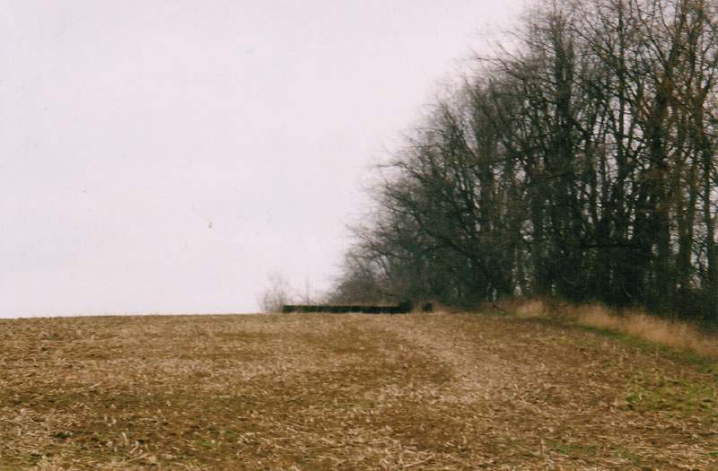
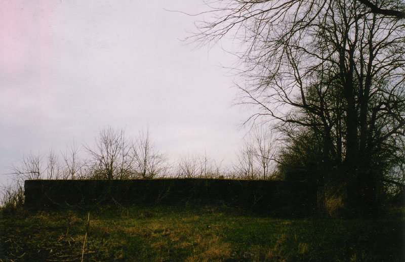
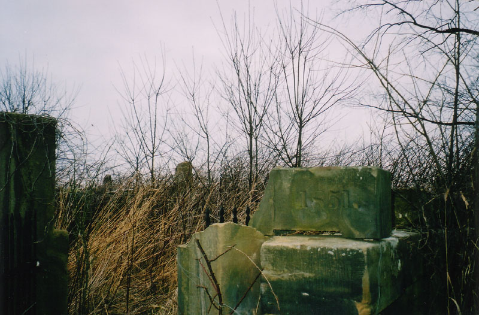
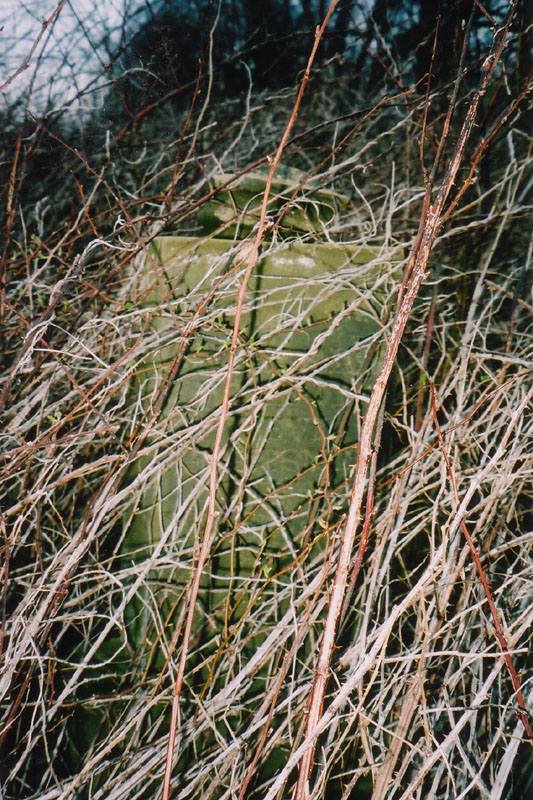
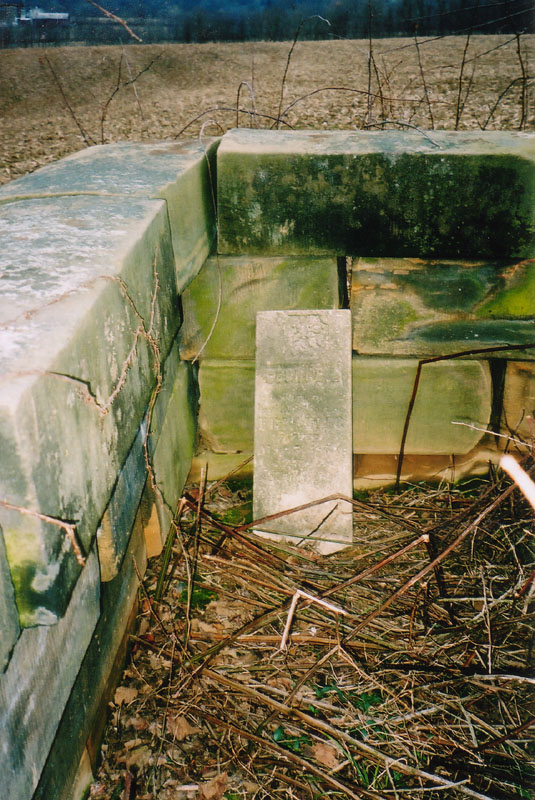

Stone Wall Cemetery #2
The first Stone Wall Cemetery profiled on Forgotten Ohio is a popular and well-kept graveyard located in a small park just west of Lancaster, off Route 22. It's been there since 1817, and the high wall has surrounded it for almost as long. Ghost stories are told about it because of its weird shape, and because it's so dark behind the gate at night.

But how many people know about the other Stone Wall Cemetery on Route 22? This one is also surrounded by a stone enclosure--rectangular, not round. Its gate is gone and its stone archway collapsed long ago, leaving it open to visitors. And instead of a park with a carved sign and benches to mark it, the residents of this stone wall cemetery are nearly forgotten in their thornbush-clotted plot, which stands at the edge of a farmer's field high atop a sloping hill east of town. Its real name is the Freisner Cemetery (sometimes spelled Friesner).

The directions to find this nearly unheard-of Stone Wall Cemetery were e-mailed to me by a helpful website viewer who stumbled across it himself a while back. It's impossible to see from Route 22 unless you know exactly what you're looking for; as he pointed out, even when you're close, it looks like the foundation of an old barn.

It's actually a family plot that was pretty fancy at one time--the Freisner family, perhaps? The wall is more decorative than functional, since it only comes up to about mid-stomach. A stone arch once spanned the doorway, but it fell down, and the stones were stacked along the rim of the wall. One of them, which you can see in the photo below, gives the year when, I assume, the first burial took place: 1851. That makes it a little newer than Stone Wall #1, even though it's in much worse shape.

It's hard to get a very good look at the stones inside, even when the leaves are off the trees and the weeds are thin, because of the massive thornbushes that have taken up residence inside the enclosure. Nobody has bothered to cut anything down for a long time, and two fairly large trees have managed to take root between the stones as well as the thick, nasty thorns.
If you look closely you can make out the gravestones through the thorny branches.
. . . . .

Certain parts are pretty clear, though. Katydid, who accompanied me and braved an asthma attack from climbing the hill, propped one of the broken markers against the inside of the wall and took an unobstructed photograph of it. (All of the clear photos on this page appear courtesy of her and her nice camera.)

Until I learn more about this cemetery, I'll have to leave it at that. It's bound to have a name and a history I'm in the dark about. And to top it off, the excellent site Lancaster's Attic shows yet another Stone Wall Cemetery in Fairfield County--this one in Clear Creek Township. If you'd like to take a look at the Freisner Cemetery, you'll have to find someplace to park just past the place where Route 37 splits off from Route 22 east of Lancaster (we parked in the factory lot), cross the highway, and walk up the hill. Stay close to the tree line, at the edge of the farm field, and you'll come right up to the wall. It's definitely worth a look.
For more information, try:
Stone Wall Cemetery #1
Lancaster's Attic: Fairfield County's Stonewalled Cemeteries
Grave Addiction - Fairfield County Cemeteries
Back
{kind=link}
{kind=link}
{kind=link}
{kind=link}
{kind=link}
{kind=link}